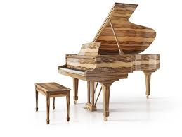
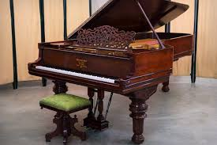
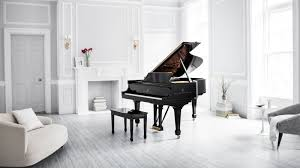

About Me
Hi there! My name is Kaleb Sparks. This is my first semester at BYU! I am from West Jordan, Utah and come from a small family of four. I just returned from my mission in Mexico last November. I served in the México Ciudad Juárez Mission, and I am so grateful for all of the experiences that I have had along the way. I love playing the piano! I have actually played now for about fourteen years! So for this page of my website, I wanted to introduce to you my favorite brand of piano: Steinway & Sons
Why I love Steinway:
There are several reasons why I simply love playing on a Steinway:
- The sound is very refined
- When playing a Steinway, the pianist can have great control as to the sounds that they are making (whether loud or soft).
- The quality wood that makes up a Steinway allows for sound to leave the piano easily, meaning when playing a Steinway, the piano's pure sound comes through.
- It is one of the easiest pianos to play
- From my experience playing the piano, some pianos make it really difficult to press the keys to make sound. This prevents the pianist from being able to create the desired sounds and can result in quicker exhaustion of the fingers (which may not sound real, but trust me, it is).
- The Steinway pianos are made with keys that are simple and easy to press, making them ultimately easier to play for the pianist.
- You can tell that you are playing a piano made to the Steinway standard
- Steiwnays are built using prime materials. For example, the wood used for their pianos comes from a certain small group of islands where the wood has been found the best to allow sound to pass through it.
- It is for reasons like this (and many more) that Steinway pianos are the most expensive in the world.
These are some beautiful Steinway pianos:



Watch this video that shows why Steinway pianos are so expensive:
Does this make you want to learn the piano? Look at this cool demo below to start learning about the notes and scales of the piano (you can also listen to some cool songs!):